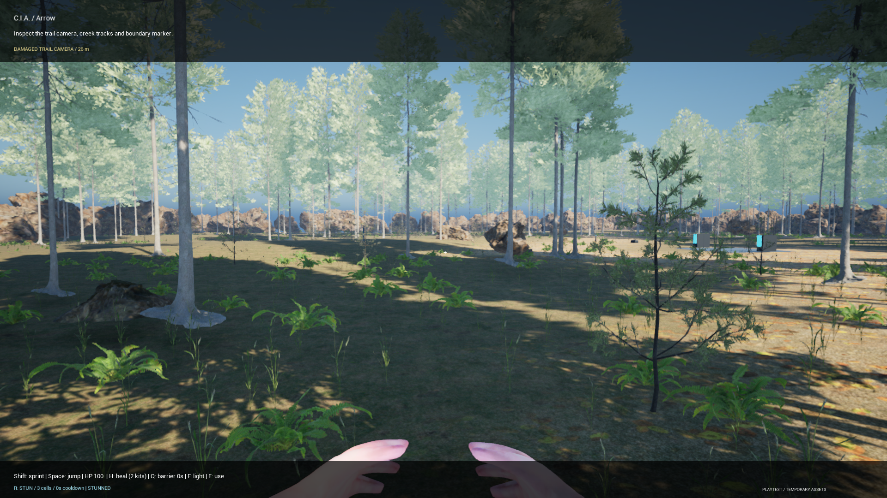
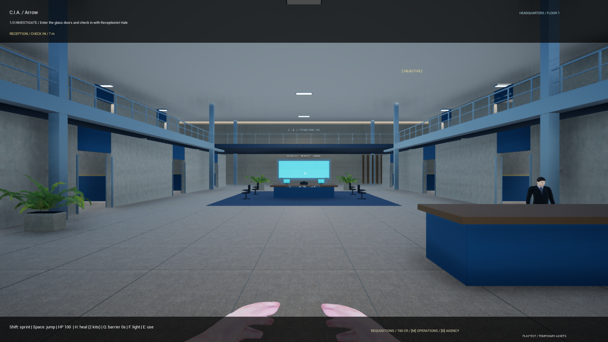

Read the scene.
Inspect the clues, follow your field objectives and prepare the equipment you'll need before approaching the threat.

Four agents. One headquarters. A case that won't close itself. Investigate cryptid activity, contain the threat and return to finish the job.
FREE DEVELOPMENT PLAYTEST / PUBLIC BUILD: SOLO & LAN
A case starts with evidence and ends with accountability. Your squad has to come back and clean up what it leaves behind.
Inspect the clues, follow your field objectives and prepare the equipment you'll need before approaching the threat.
Use the assignment's containment mechanics and your field supplies. Cryptids can injure and defeat agents; a stun can buy you time.
Return to headquarters, report the outcome, then revisit the scene for cleanup. Extraction alone doesn't finish the assignment.

Choose a case at the mission board, manage agency funds and purchase host-owned upgrades. Play as Arrow, Treko, Agent 03 or Agent 04.
The demo includes a headquarters hub and a locked third-floor preview. Detailed appearance editing and full room relocation are still in development.
Controls and playtest help ↗These are playable prototype assignments. They are not finished one-to-two-hour campaign chapters.
Trace the forest sighting and bring the containment operation to a close.
Investigate a hostile cryptid case and complete the follow-up objectives.
Follow the evidence underground and resolve the cave assignment.
Enter an unstable agency test dungeon with its own investigation and closure stages.
Try the current Windows demo and tell us what breaks, what feels unclear and what you want to play again.
v0.2.0-playtest.1 / Windows x64 / fully extract before launching
Public download: solo play and up to four players on the same local network.
Private internet testing: Epic sign-in, session search and HQ hosting have passed. Joining from another network and wider Epic-account access are still under verification. The public LAN ZIP does not include internet matchmaking.
Voice is push-to-talk. Local recording is optional. Read the privacy notice before joining a squad or sharing a clip.